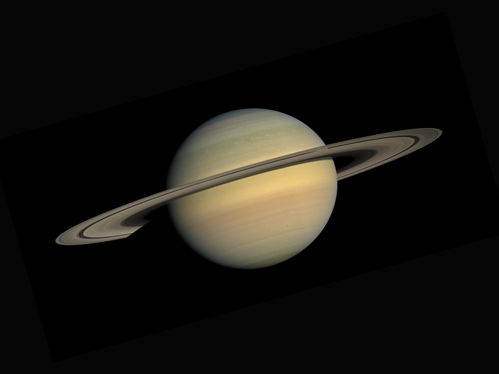

Some Facts About Saturn!
Saturn orbits the Sun at a mean distance of 1,427,000,000 km (887 million miles).
Mean distance from Sun 1,426,666,000 km (9.5 AU).
Mass 5.683 x 1026 kg.
Number of known moons 62.